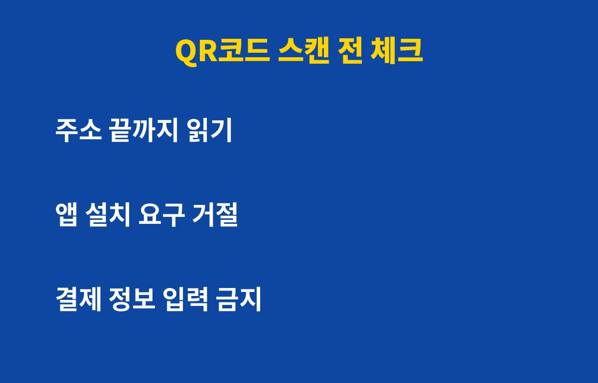
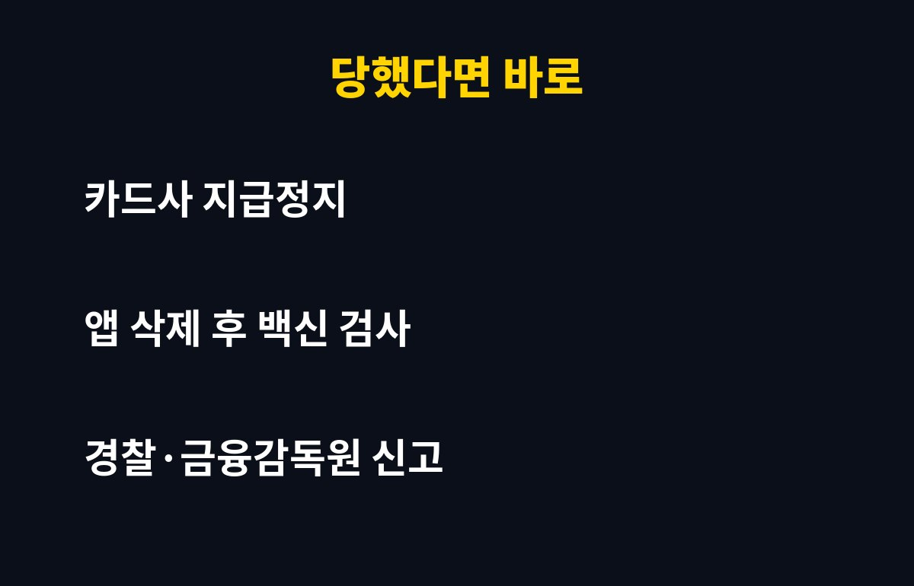

QR코드 찍었다가 통장이 털릴 수 있다는 말, 들어보셨나요? 스마트폰 쓰신다면 누구나 대상이라서, 찍기 전 딱 3초만 확인하면 막을 수 있는 방법을 정리했어요. 지금 그냥 찍고 계셨다면 끝까지 읽어보세요.
큐싱은 QR코드와 피싱을 합친 말이에요. 진짜처럼 보이는 QR코드 위에 가짜 QR코드 스티커를 붙여두거나, 문자·메일로 QR코드를 보내서 가짜 사이트로 끌어들이는 수법이에요.
문제는 QR코드가 눈으로 봐서는 어디로 연결되는지 알 수 없다는 점이에요. 그래서 링크 문자보다 더 쉽게 속는 경우가 많아요.
주차장 결제 안내판, 식당 테이블 주문 QR, 전기차 충전소, 길가 전단지처럼 사람이 많이 찍는 곳이 노려져요. 특히 "주차 요금 미납", "택배 주소 확인" 같은 급한 문구가 붙어 있으면 한 번 더 의심해야 해요.

| 상황 | 위험 신호 | 대처 |
| 주차·충전 결제 | 스티커가 덧붙여진 느낌 | 스티커를 만져보고 공식 앱으로 결제 |
| 식당 주문 | 처음 보는 도메인 | 주소 끝까지 읽고 직원에게 확인 |
| 문자·메일 QR | 급하게 재촉하는 문구 | 찍지 말고 삭제 |
첫째, 스캔하면 뜨는 주소를 끝까지 읽어보세요. 평소 알던 공식 주소와 한 글자만 달라도 가짜일 수 있어요. 둘째, 앱 설치나 "보안 앱 업데이트"를 요구하면 바로 닫으세요. 공식 앱은 반드시 앱스토어에서만 받아야 해요.
셋째, 카드번호·비밀번호·인증번호를 입력하라는 화면이 나오면 멈추세요. QR코드로 들어간 화면에서 금융 정보를 입력하는 건 가장 위험한 행동이에요.

당황하지 말고 순서대로 하시면 돼요. 먼저 설치된 이상한 앱이 있으면 삭제하고, 백신 앱으로 검사하세요. 카드 정보를 입력했다면 바로 카드사에 전화해서 지급정지를 요청하세요.
그다음 경찰청 사이버범죄 신고나 금융감독원에 피해를 알려두면 이후 구제 절차를 밟기 훨씬 수월해요. 시간이 지날수록 불리하니까 "나중에"는 금물이에요.
스마트폰 기본 카메라 앱은 주소 미리보기를 보여주니까, 바로 접속하지 말고 미리보기부터 읽는 습관을 들이세요. 결제는 가능하면 공식 앱이나 직접 검색한 사이트에서 하는 게 가장 안전해요. 가족, 특히 부모님께도 꼭 알려드리세요.
도움이 되셨다면 구독해두세요. 이런 생활 속 IT 보안 소식을 계속 쉽게 정리해 드릴게요.
기사·공식 발표 기준이며 출시·가격 정보는 바뀔 수 있어요.